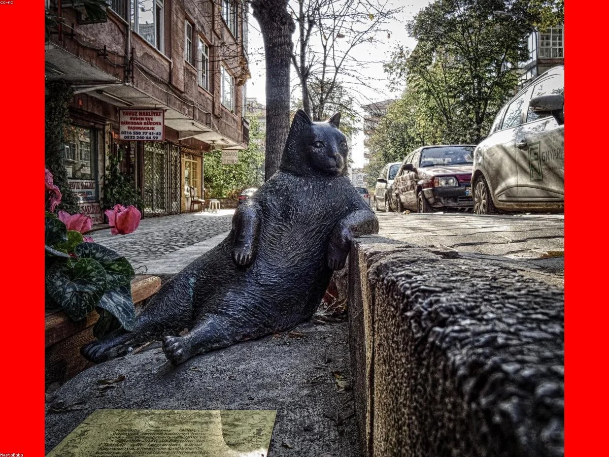
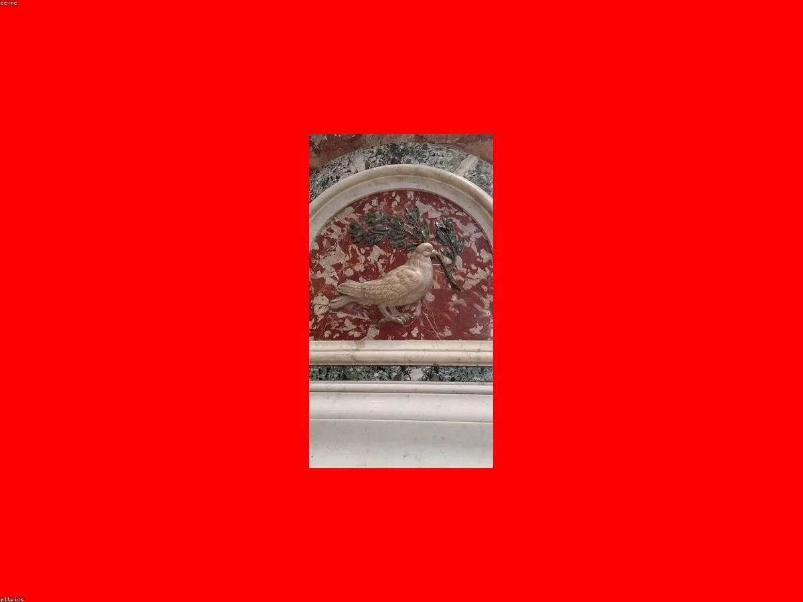
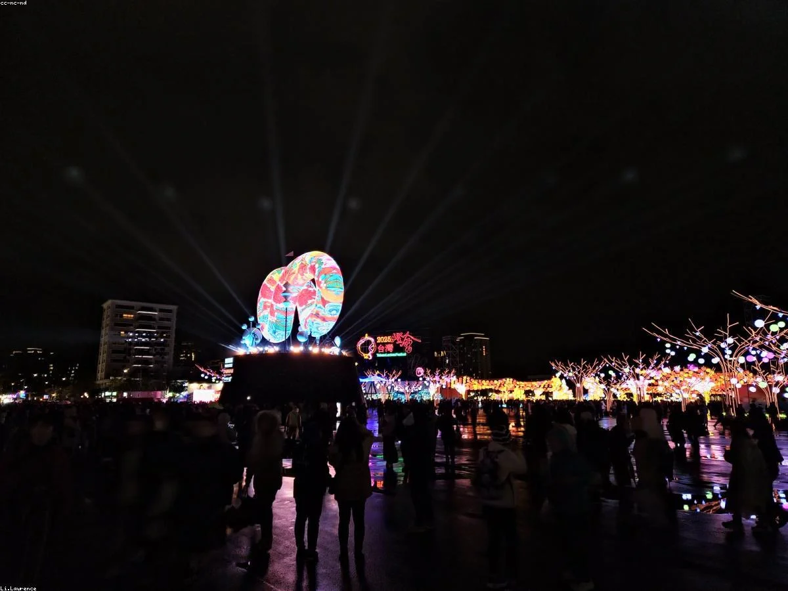
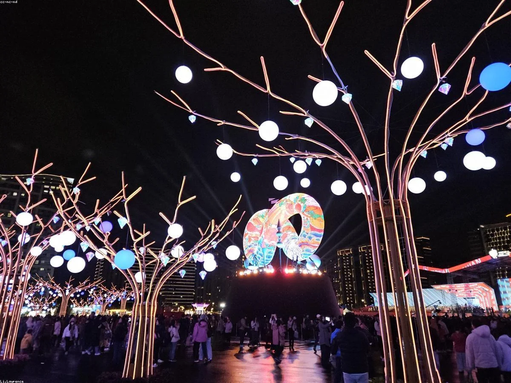

最新上傳背景圖 (107)
按修改時間排序（從新到舊）
backgrounds/valentine/04.webp
2026/4/14 上午3:52:36
backgrounds/valentine/03.webp
2026/4/14 上午3:52:36
backgrounds/valentine/02.webp
2026/4/14 上午3:52:36

backgrounds/valentine/01.webp
2026/4/14 上午3:52:36
backgrounds/teachers/04.webp
2026/4/14 上午3:52:36
backgrounds/teachers/03.webp
2026/4/14 上午3:52:35
backgrounds/teachers/02.webp
2026/4/14 上午3:52:35
backgrounds/teachers/01.webp
2026/4/14 上午3:52:35

backgrounds/solstice/04.webp
2026/4/14 上午3:52:35

backgrounds/solstice/03.webp
2026/4/14 上午3:52:35

backgrounds/solstice/02.webp
2026/4/14 上午3:52:34

backgrounds/solstice/01.webp
2026/4/14 上午3:52:34
backgrounds/qingming/04.webp
2026/4/14 上午3:52:34

backgrounds/qingming/03.webp
2026/4/14 上午3:52:34
backgrounds/peace/04.webp
2026/4/14 上午3:52:34

backgrounds/peace/03.webp
2026/4/14 上午3:52:33

backgrounds/peace/02.webp
2026/4/14 上午3:52:33
backgrounds/peace/01.webp
2026/4/14 上午3:52:33
backgrounds/night/04.webp
2026/4/14 上午3:52:33
backgrounds/night/03.webp
2026/4/14 上午3:52:33
backgrounds/newyear/04.webp
2026/4/14 上午3:52:32
backgrounds/newyear/03.webp
2026/4/14 上午3:52:32
backgrounds/newyear/02.webp
2026/4/14 上午3:52:32
backgrounds/newyear/01.webp
2026/4/14 上午3:52:32
backgrounds/nationalday/04.webp
2026/4/14 上午3:52:32
backgrounds/nationalday/03.webp
2026/4/14 上午3:52:31

backgrounds/nationalday/02.webp
2026/4/14 上午3:52:31
backgrounds/nationalday/01.webp
2026/4/14 上午3:52:31

backgrounds/mothersday/04.webp
2026/4/14 上午3:52:31

backgrounds/mothersday/03.webp
2026/4/14 上午3:52:31
backgrounds/morning/04.webp
2026/4/14 上午3:52:31
backgrounds/morning/03.webp
2026/4/14 上午3:52:30

backgrounds/morning/02.webp
2026/4/14 上午3:52:30
backgrounds/morning/01.webp
2026/4/14 上午3:52:30
backgrounds/midautumn/04.webp
2026/4/14 上午3:52:30

backgrounds/midautumn/03.webp
2026/4/14 上午3:52:30
backgrounds/midautumn/02.webp
2026/4/14 上午3:52:30

backgrounds/midautumn/01.webp
2026/4/14 上午3:52:29
backgrounds/lantern/04.webp
2026/4/14 上午3:52:29
backgrounds/lantern/03.webp
2026/4/14 上午3:52:29

backgrounds/lantern/02.webp
2026/4/14 上午3:52:29

backgrounds/lantern/01.webp
2026/4/14 上午3:52:29
backgrounds/labor/04.webp
2026/4/14 上午3:52:29
backgrounds/labor/03.webp
2026/4/14 上午3:52:29
backgrounds/labor/02.webp
2026/4/14 上午3:52:28
backgrounds/labor/01.webp
2026/4/14 上午3:52:28
backgrounds/health/04.webp
2026/4/14 上午3:52:28

backgrounds/health/03.webp
2026/4/14 上午3:52:28

backgrounds/health/02.webp
2026/4/14 上午3:52:28

backgrounds/health/01.webp
2026/4/14 上午3:52:27
backgrounds/halloween/04.webp
2026/4/14 上午3:52:27
backgrounds/halloween/03.webp
2026/4/14 上午3:52:27
backgrounds/halloween/02.webp
2026/4/14 上午3:52:27
backgrounds/halloween/01.webp
2026/4/14 上午3:52:27

backgrounds/ghost/04.webp
2026/4/14 上午3:52:26

backgrounds/ghost/03.webp
2026/4/14 上午3:52:26
backgrounds/ghost/02.webp
2026/4/14 上午3:52:26

backgrounds/ghost/01.webp
2026/4/14 上午3:52:25
backgrounds/funny/04.webp
2026/4/14 上午3:52:25
backgrounds/funny/03.webp
2026/4/14 上午3:52:25
backgrounds/funny/02.webp
2026/4/14 上午3:52:25

backgrounds/fathersday/04.webp
2026/4/14 上午3:52:24
backgrounds/fathersday/03.webp
2026/4/14 上午3:52:24

backgrounds/fathersday/02.webp
2026/4/14 上午3:52:24

backgrounds/fathersday/01.webp
2026/4/14 上午3:52:24
backgrounds/dragonboat/04.webp
2026/4/14 上午3:52:23
backgrounds/dragonboat/03.webp
2026/4/14 上午3:52:23

backgrounds/dragonboat/02.webp
2026/4/14 上午3:52:23

backgrounds/dragonboat/01.webp
2026/4/14 上午3:52:23

backgrounds/double-ninth/04.webp
2026/4/14 上午3:52:23
backgrounds/double-ninth/03.webp
2026/4/14 上午3:52:22
backgrounds/double-ninth/02.webp
2026/4/14 上午3:52:22
backgrounds/double-ninth/01.webp
2026/4/14 上午3:52:22
backgrounds/cny/04.webp
2026/4/14 上午3:52:22
backgrounds/cny/03.webp
2026/4/14 上午3:52:22

backgrounds/cny/02.webp
2026/4/14 上午3:52:21

backgrounds/cny/01.webp
2026/4/14 上午3:52:21
backgrounds/christmas/04.webp
2026/4/14 上午3:52:21
backgrounds/christmas/03.webp
2026/4/14 上午3:52:21
backgrounds/christmas/02.webp
2026/4/14 上午3:52:20
backgrounds/christmas/01.webp
2026/4/14 上午3:52:20
backgrounds/children/04.webp
2026/4/14 上午3:52:20
backgrounds/children/03.webp
2026/4/14 上午3:52:20
backgrounds/children/02.webp
2026/4/14 上午3:52:20
backgrounds/children/01.webp
2026/4/14 上午3:52:20
backgrounds/buddhist/04.webp
2026/4/14 上午3:52:19
backgrounds/buddhist/03.webp
2026/4/14 上午3:52:19
backgrounds/birthday/04.webp
2026/4/14 上午3:52:19
backgrounds/birthday/03.webp
2026/4/14 上午3:52:19
backgrounds/night/01.webp
2026/4/14 上午3:34:04
backgrounds/night/02.webp
2026/4/14 上午3:34:04
backgrounds/qingming/01.webp
2026/4/14 上午3:34:04
backgrounds/qingming/02.webp
2026/4/14 上午3:34:04
backgrounds/classic/sample.webp
2026/4/14 上午3:34:04
backgrounds/funny/01.webp
2026/4/14 上午3:34:04

backgrounds/mothersday/01.webp
2026/4/14 上午3:34:04

backgrounds/mothersday/02.webp
2026/4/14 上午3:34:04
backgrounds/birthday/01.webp
2026/4/14 上午3:34:04
backgrounds/birthday/02.webp
2026/4/14 上午3:34:04
backgrounds/buddhist/0_2.webp
2026/4/14 上午3:34:04
backgrounds/buddhist/0_3.webp
2026/4/14 上午3:34:04
backgrounds/classic/0_0.webp
2026/4/14 上午3:34:04
backgrounds/classic/0_2.webp
2026/4/14 上午3:34:04
backgrounds/classic/0_3.webp
2026/4/14 上午3:34:04
backgrounds/classic/11.webp
2026/4/14 上午3:34:04
backgrounds/classic/111.webp
2026/4/14 上午3:34:04
backgrounds/classic/s.webp
2026/4/14 上午3:34:04